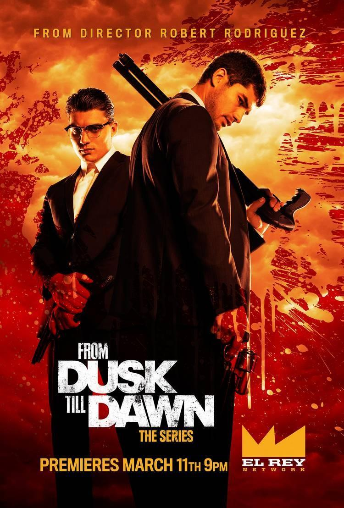

Hellraiser
Mini resumen:Dos hermanos atracadores se encuentran en huida, despúes de haber atracado un banco entre ellos 2, durante toda la serie se verán a estos hermanos y un Ranger de Texas(creo) y una chica que es metida en todos estos problemas.
Créditos y reparto
| Dirección y guion: | Clive Barker |
| Producción: | Christopher Figg |
| Basada en: | The Hellbound Heart,de Clive Barker |
| Música: | Christopher Young |
| Fotografía: | Robin Vidgeon |
| Montaje: | Robin Vidgeon, Tony Randel |
| País: | Reino Unido |
| Fecha de estreno | 10 de septiembre de 1987 (Londres) |
| genero | Terror, Gore |
| Duración: | 94 minutos |
| Clasificación: | +18 (en la mayoria de los País:es) |